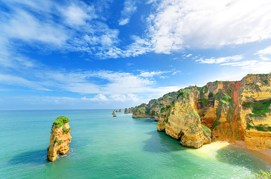

Portugal is mainly characterized by a Mediterranean climate
Annual average rainfall in the mainland varies from just over 3,200 mm (126.0 in) on the Peneda-Gerês National Park to less than 500 mm (19.7 in) in southern parts of Alentejo. In some areas, such as the Guadiana basin, annual diurnal average temperatures can be as high as 26 °C (79 °F), and summer's highest temperatures are routinely over 40 °C (104 °F). The record high of 47.4 °C (117.3 °F) was recorded in Amareleja, although this might not be the hottest spot in summer, according to satellite readings. Snowfalls occur regularly in the winter in the interior North and Centre of the country in districts such as Guarda, Bragança, Viseu and Vila Real, particularly on the mountains. In winter, temperatures may drop below −10.0 °C (14.0 °F), particularly in Serra da Estrela, Serra do Gerês, Serra do Marão and Serra de Montesinho. In these places snow can fall any time from October to May. In the South of the country snowfalls are rare but still occur in the highest elevations. While the official absolute minimum by IPMA is −16.0 °C (3.2 °F) in Penhas da Saúde and Miranda do Douro, lower temperatures have been recorded, such as −17.5 °C (0.5 °F) by Bragança Polytechnic Institute in the outskirts of the city in 1983, and below −20.0 °C (−4.0 °F) in Serra da Estrela.
